A Duality of Wonder
Occupying the Malay Peninsula, Peninsular Malaysia is home to the nation's capital, historic trading ports, diverse cultural heritage, and vibrant cities that reflect centuries of interaction between Asia's great civilizations.

Taman Negara
Natural HeritageVenture into one of the world's oldest tropical rainforests, estimated to be over 130 million years old. This emerald sanctuary hosts a vast ecosystem where giant dipterocarps tower over winding river systems and hidden wildlife.

Batu Caves
Sacred TraditionsRising 100 meters above the ground, the Batu Caves complex is a series of caves and cave temples in Gombak. The site is characterized by the monumental golden statue of Lord Murugan and the vibrant ascent of 272 rainbow-colored steps that challenge and inspire visitors from around the globe.
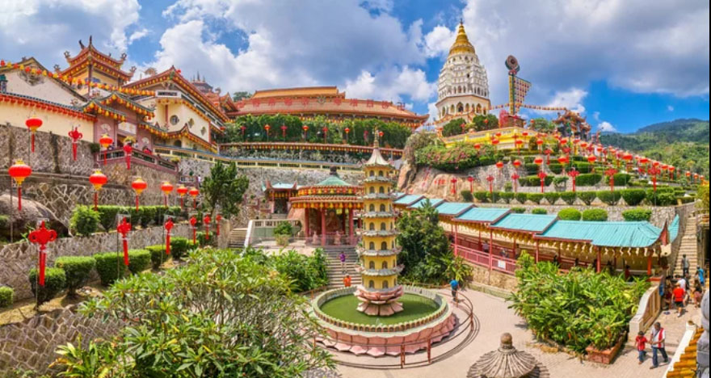
Kek Lok Si Temple
Buddhist HeritageOne of Southeast Asia’s largest Buddhist temples, Kek Lok Si is renowned for its majestic pagoda, towering statue of Guan Yin, and panoramic views over Penang.
Kuala Lumpur: The Evolving Skyline
A multicultural capital where sleek skyscrapers look down upon historic colonial architecture and bustling street markets.

Bukit Bintang
The entertainment and shopping heart of the city, alive with energy 24/7.

Petronas Twin Towers
The soaring 88-story steel structures that redefined Malaysia's place on the global map.

Merdeka Square
Where heritage architecture meets the vast, open grounds of national independence.
The Heart of Wild Adventure
Malaysia's Borneo region consists of the states of Sabah and Sarawak, offering breathtaking rainforests, diverse wildlife, and rich indigenous cultures.
From the towering peak of Mount Kinabalu to the rich marine life of Sipadan and the ancient rainforests of Borneo, Sabah offers some of Southeast Asia’s most remarkable natural wonders and cultural diversity.
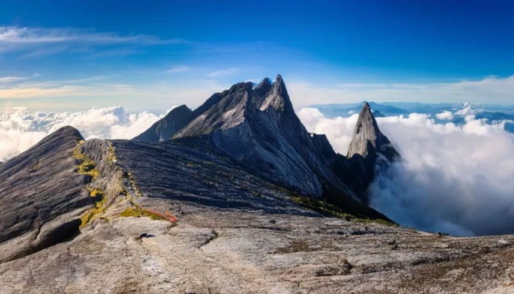
Mount Kinabalu
The spiritual peak visible from the cityReaching 4,095 meters, Mount Kinabalu is more than just a mountain; it is the spiritual anchor of the Kadazan-Dusun people. Its jagged granite towers provide a constant, awe-inspiring backdrop to modern life in Sabah, serving as a reminder of the raw power that still thrives on this island.
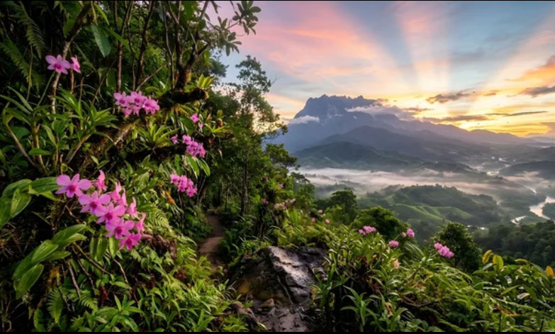
Kinabalu National Park
UNESCO HERITAGEWorld Heritage site, managed nature with thousands of endemic species.UNESCO HERITAGE

Sepilok Centre
Orangutan Rehabilitation CentreEstablished in 1964, the Sepilok Orangutan Rehabilitation Centre rescues and rehabilitates orphaned and injured orangutans, helping them return to the wild while promoting the conservation of Borneo’s endangered wildlife.
Kota Kinabalu
As the capital of Sabah, Kota Kinabalu combines modern city life with stunning coastal scenery, serving as the main gateway to Mount Kinabalu, tropical islands, and the natural wonders of Malaysian Borneo.
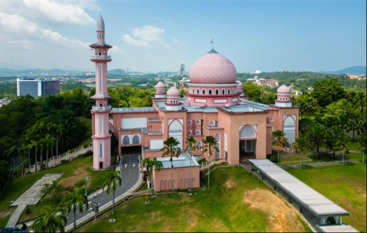
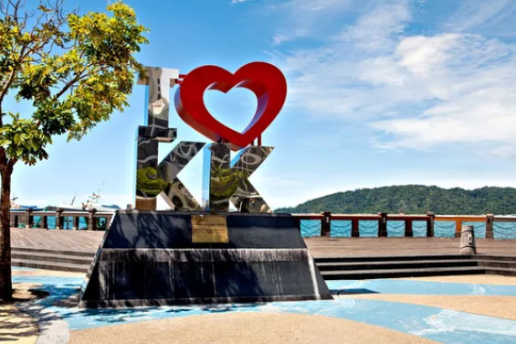
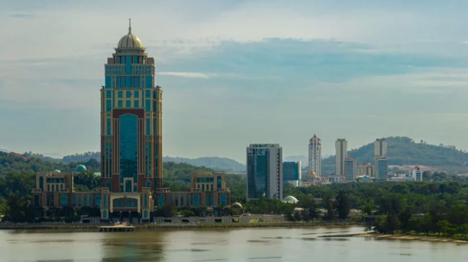
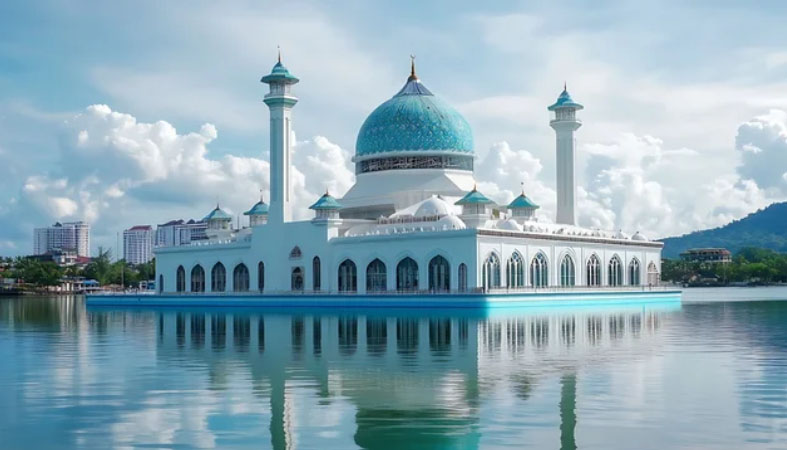
Home to diverse indigenous communities, vast rainforests, and winding rivers, Sarawak blends rich cultural heritage with breathtaking natural landscapes, offering a unique glimpse into the spirit of Borneo.
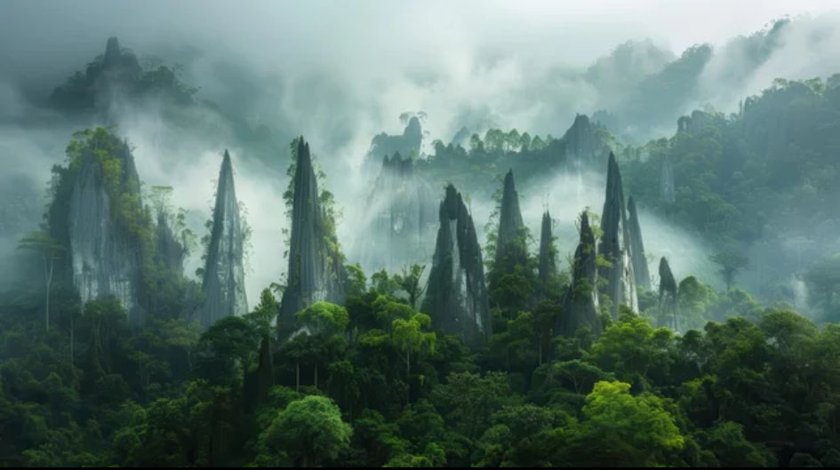
Gunung Mulu National Park
A World Beneath the RainforestA UNESCO World Heritage Site, Gunung Mulu National Park is renowned for its vast limestone cave systems, dramatic karst formations, and rich rainforest biodiversity, making it one of Southeast Asia's most extraordinary natural wonders.
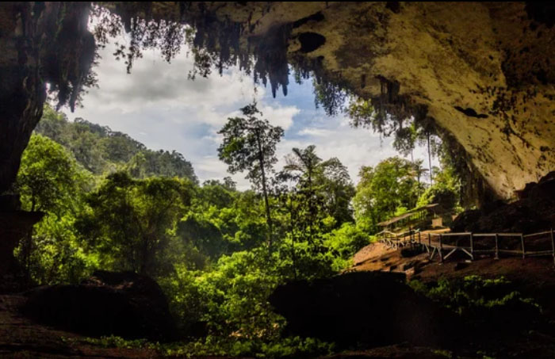
Niah National Park
New UNESCO World Heritage SiteHome to the newly designated UNESCO World Heritage Site of Niah Caves, the park offers a fascinating journey into humanity's distant past. Discoveries of a 40,000-year-old human skull and prehistoric cave paintings have made this vast cave complex one of Southeast Asia's most significant archaeological treasures.
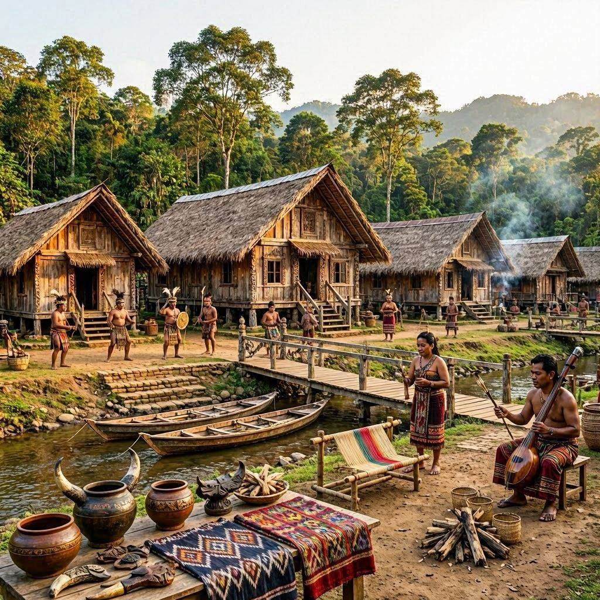
Kampung Budaya Sarawak
Living Traditions of SarawakKampung Budaya Sarawak showcases the diverse heritage of Sarawak's indigenous communities through traditional longhouses, cultural performances, and hands-on experiences that bring centuries-old traditions to life.
Kuching
Nestled along the Sarawak River, Kuching blends colonial-era charm, vibrant waterfronts, and rich cultural heritage, making it the perfect gateway to the natural and cultural wonders of Borneo.
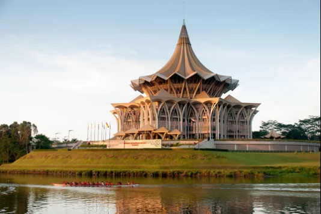
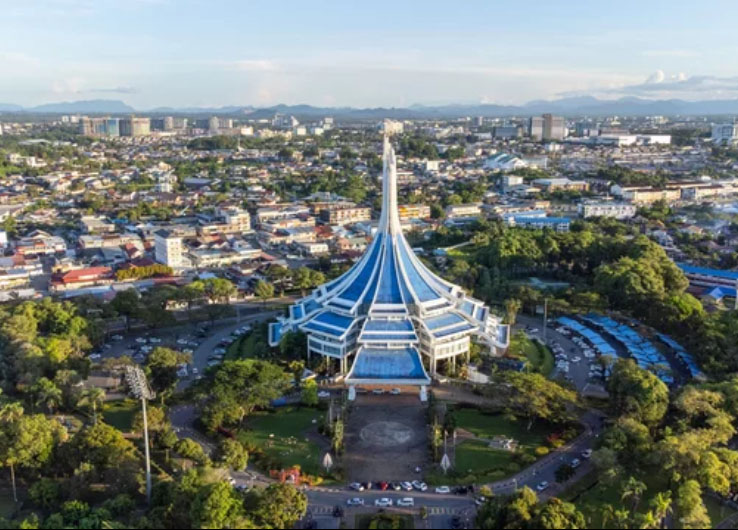
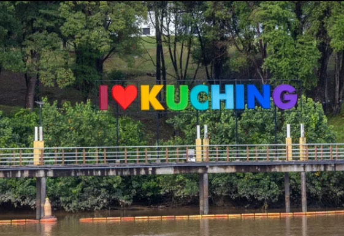
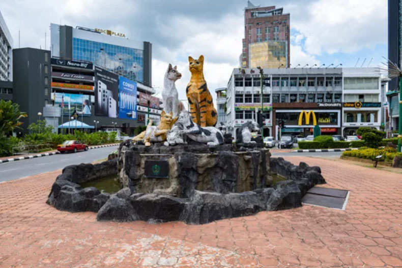
Cuisine of Malaysia
A vibrant tapestry of flavors where centuries of trade and tradition converge on a single plate. From bustling night markets to serene island kitchens.
Flavors of the Peninsula
Tradition & Spice
Nasi Lemak
Fragrant coconut rice steamed with pandan leaves, served with fiery sambal and crunchy garnishes.

Satay
Succulent grilled meat skewers marinated in turmeric and lemongrass, served with thick peanut sauce.

Hokkien Mee
Dark, smoky stir-fried noodles braised in rich soy sauce with crispy lardons and succulent seafood.
Tastes of Borneo
Tropical Wilds
Sarawak Laksa
A complex, spicy broth infused with coconut milk and over 20 aromatic herbs and spices.

Manuk Pansuh
Chicken cooked in a hollow bamboo stalk with aromatics, a traditional Dayak delicacy.

Hinava
Fresh raw fish cured in citrus juice, tossed with ginger, shallots, and bird's eye chilies.
Sweet Delights
Cool & Refreshing
Cendol
Shaved ice with green pandan jelly, swimming in coconut milk and rich Gula Melaka syrup.

Ais Kacang
A colorful ice mountain topped with sweet corn, red beans, grass jelly, and various syrups.

Kuih Muih
Traditional bite-sized cakes in vibrant colors, made from glutinous rice, coconut, and pandan.
マレーシアの歴史
Where Trade Winds Shaped a Nation
From the rise of Malacca Sultanate to waves of global exchange and colonial rule, Malaysia’s past reflects a dynamic blend of faith, commerce, and cultural fusion.
古代
ランカスカ王国 （2世紀～14世紀）
マレー半島北部に存在した初期の王国で、インド文化の影響を受けた。
盤盤（パンパン）王国（3世紀～5世紀）
マレー半島に存在し、交易拠点として栄えた。
シュリーヴィジャヤ王国 （7世紀～13世紀）
スマトラ島を中心に、マレー半島南部にも影響を及ぼした仏教国家。
中世
クダ王国 （630年～現在）
マレー半島北部に位置し、イスラム教を受け入れた最古のスルタン国。
マラッカ王国（1402年～1511年）
マレー半島南部に成立し、イスラム教を国教とした港市国家。
スールー王国 （1450年～1899年）
ボルネオ島北部とフィリピン南部を支配したイスラム教国家。
近世
ポルトガル領マラッカ（1511年～1641年）
マラッカ王国を滅ぼし、ポルトガルが支配。
オランダ領マラッカ（1641年～1824年）
ポルトガルに代わり、オランダがマラッカを支配
イギリス領マラヤ（1824年～1946年）
1824年英蘭協約によりマレー半島及びボルネオ島西北部が英国の勢力範囲下となる。
近現代・現代
日本占領期 （1941年～1945年）
第二次世界大戦中、日本がマレー半島を占領。
マラヤ連邦 （1948年～1963年）
イギリスからの独立を目指し、連邦制を採用。
マレーシア連邦 （1963年～現在）
シンガポール、サバ、サラワクを加えて成立。
1965年にシンガポールが分離独立し、現在の形に。
多民族国家として発展を続け、経済成長を遂げる。
「マラッカ」から始まった西側（マレー半島）
ルーツ: 15世紀のマラッカ王国です。ここで「マレー人＝イスラム教」というアイデンティティが確立されました。 その後: ポルトガル、オランダ、そしてイギリスに支配され、最終的に「マラヤ連邦」として独立。これが今のマレーシアの「西半分」です。
「スールー」と「ブルネイ」が関わる東側（ボルネオ島）
マレーシアの「東半分」（サバ州・サラワク州）は、マラッカとは別の力が働いていました。
サバ州: かつてスールー・スルタン国（現在のフィリピン南部が拠点）とブルネイが支配権を争っていた場所です。イギリスの北ボルネオ会社がスールーから「租借（借りる）」したことが、今のマレーシア領になるきっかけでした。
サラワク州: ブルネイの領土でしたが、反乱鎮圧を助けたイギリス人のジェームズ・ブルックが、ブルネイから割譲を受けて「白人王」として統治しました。
1963年に「合体」した
この「マラッカ系の半島」と「スールー・ブルネイ系のボルネオ」が、1963年に合体してできたのが「マレーシア」です。